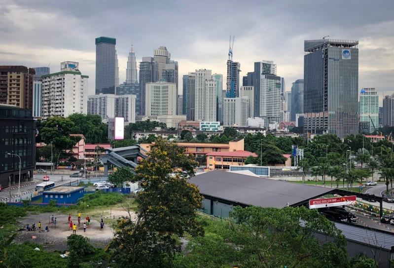

金融时报报导，过去三年，因为学生和投资人激增，住在马来西亚的中国公民人数几乎增加了一倍。
马来西亚大学中国研究所所长Ngeow Chow Bing说，保守估计有15万人，甚至可能高达20万人，远高于2022年的大约8.2万人。
不同于中国的有钱人通过投资移民涌向新加坡、马尔他、葡萄牙和希腊等国，新迁入马来西亚的中国人多半来自中产阶级家庭，或者回避西方国家反华情绪的学生，他们认为马来西亚较实惠、大学入学竞争没那么激烈，而且不像在美国或澳洲「每天被挑出来妖魔化」。中国人已经成为马来西亚外国学生和长期居民里最大的族群。
官方数据显示，去年有44,043名中国学生进入马来西亚高等教育机构，比起2021年增加35%。马来西亚有250多所国际学校，预料学生带来的资金流将继续。而持有长期居留签证的中国移民已超过56,000人。
泰国先前也出现华裔移民均迅速增加的现象，根据金融时报访问曼谷法政大学人员，估计2022年新移民有11万到13万人来自中国。两者遇到的「同化」问题，程度不同，主要是大马仅有3,400万人口，不到泰国7,200万的一半，而且大马对种族分歧问题较敏感，多数族裔穆斯林马来人抵制华裔居民的影响力增加。